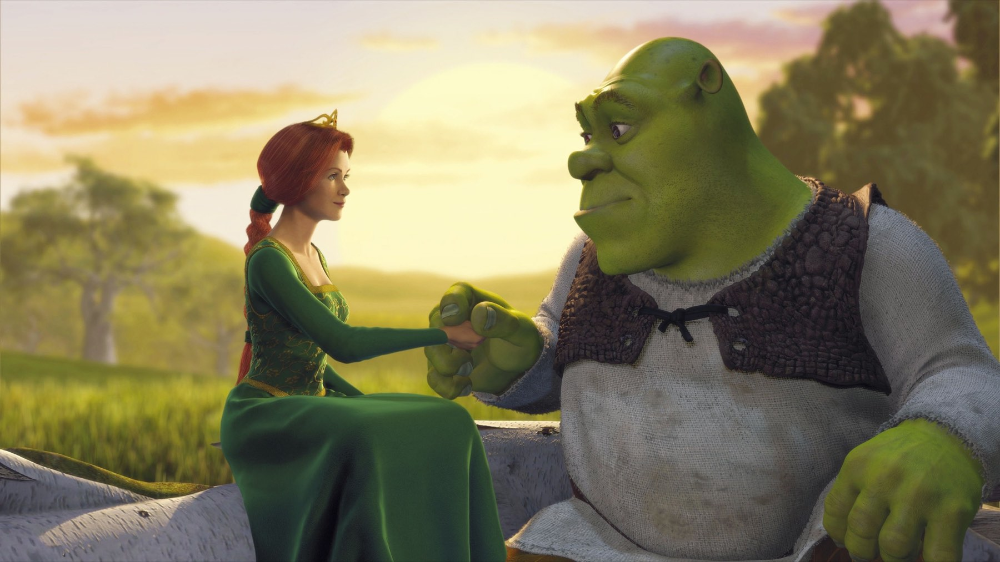
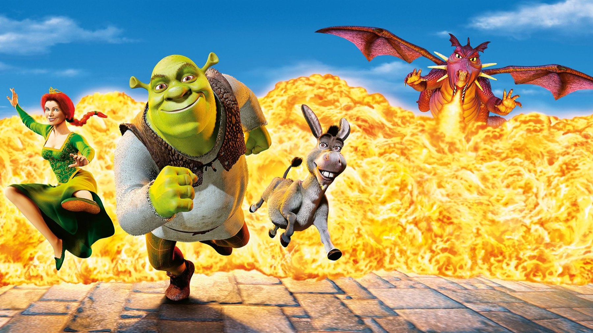

Shrek: battute e retroscena che da bambini non capivamo
Dalla voce mai finita di Chris Farley alla satira su Disney: il film aveva due piani di lettura e ne vedevamo uno solo
Da bambini ridevamo del Ciuchino e di un orco che vive in una palude. Da adulti si scopre che Shrek è un'opera scritta su due piani: uno per i più piccoli, uno per chi coglie le frecciate. In Italia uscì il 15 giugno 2001 e il 3 dicembre 2026 risulta in programma un ritorno in sala per i 25 anni. Prima di rivederlo, ecco sette cose che spiegano perché funziona ancora.
La prima voce di Shrek era di Chris Farley
Il primo Shrek parlava con la voce di Chris Farley. L'attore registrò quasi tutti i dialoghi, ma morì alla fine del 1997 senza finire il lavoro: secondo David Spade mancavano cinque giorni di registrazione. Fu interpellato il fratello John, che rifiutò. DreamWorks ripiegò su Mike Myers, il quale pretese una riscrittura completa della sceneggiatura, per non lasciare tracce del lavoro di Farley. Perché conta: l'orco che conosciamo è un personaggio rifatto da zero attorno a un altro attore.
L'accento scozzese arrivò a film già animato
Myers completò la voce nel corso del 1999. Nel febbraio 2000 vide un primo montaggio e chiese di registrare di nuovo tutte le battute con un accento scozzese, quello con cui sua madre gli leggeva le favole prima di dormire. Jeffrey Katzenberg, il capo di DreamWorks, ascoltò la prova e accettò di rifare le scene: disse che erano stati tolti e rifatti 4 milioni di dollari di animazione. Myers ridimensiona la cifra e ricorda che le sessioni di registrazione passarono da dieci a venti, con lo stesso compenso. Perché conta: la cadenza con cui Shrek borbotta è una scelta presa quando il lavoro sembrava chiuso.

Farquaad e le battute da grandi
Lord Farquaad, il sovrano di Duloc, è basso e vanitoso, oltre che spietato; la lista dei personaggi lo dà ispirato al Riccardo III del film del 1955. In italiano ha la voce di Oreste Rizzini, mentre Shrek è Renato Cecchetto, il Ciuchino è Nanni Baldini e Fiona è Selvaggia Quattrini. Da bambini scivolava via la battuta in cui Fiona chiede com'è il suo futuro sposo: Shrek risponde che di uomini della statura di Farquaad si è ormai a corto, e il Ciuchino aggiunge che c'è chi ha di lui una bassa opinione. Il gioco sulla statura viaggia sopra la testa dei più piccoli.
Nella stessa corte finisce Gingy, l'omino di pan di zenzero (Conrad Vernon in originale): Farquaad lo rapisce e lo tortura per sapere dove sia Shrek, ma lui non cede. Su tutto, la battuta che resta: Shrek dice che gli orchi sono come le cipolle, il Ciuchino chiede se puzzano, e la risposta è «sì… no». Per noi è la dichiarazione di poetica del film: sotto la scorza c'è altro.
Il vero bersaglio è Disney
Shrek prende in giro altri adattamenti di fiabe, e soprattutto i cartoni Disney, con una presa in giro dichiarata. La rivalità uscì dallo schermo. L'uscita in video fu fissata nello stesso giorno di Monsters, Inc., e i dirigenti Disney la giudicarono un modo scorretto di sottrarre pubblico alla loro novità, ma DreamWorks rispose di aver solo spostato la data a un venerdì. Intanto Radio Disney ricevette l'ordine di non trasmettere la pubblicità di Shrek. Perché conta: la satira era anche una partita tra studi, e da bambini la leggevamo come una parodia qualsiasi.

La canzone provvisoria che diventò la sigla
La sequenza d'apertura ha un pezzo che oggi sembra inseparabile dal film: All Star degli Smash Mouth. Eppure era un ripiego, perché era un brano provvisorio, pronto a cedere il posto a un altro. Al suo posto doveva andare Stay Home dei Self, che finì invece sui titoli di coda. Fu Katzenberg a suggerire di tenere All Star. Suo anche il consiglio di chiudere con I'm a Believer, nell'interpretazione degli Smash Mouth, per lasciare il pubblico con una grande risata. Perché conta: i due pezzi che ricordiamo meglio sono arrivati da scelte fatte in montaggio, quando serviva un colpo di scena sonoro.
Un'Hallelujah che nel disco è un'altra
Nelle sale si sente Hallelujah cantata da John Cale. Nell'album della colonna sonora, invece, c'è l'interpretazione di Rufus Wainwright. Wainwright, in un'intervista radiofonica, ipotizzò un soffitto di cristallo legato alla sua omosessualità. Esiste però una spiegazione più tecnica: lui era un artista di DreamWorks Records e Cale no, perciò la questione potrebbe essere di licenza. Perché conta: chi cerca nel disco la canzone che ricorda dallo schermo trova un'altra voce.
Un cartone a Cannes e il primo Oscar dell'animazione
Dopo l'anteprima al Mann Village Theatre di Westwood, il 22 aprile 2001, Shrek andò a Cannes e concorse per la Palma d'Oro, primo film d'animazione in concorso dopo The Missing Link del 1980. Costò 60 milioni di dollari e nel weekend d'apertura ne incassò 42,3. Poi vinse il primo Oscar assegnato al miglior lungometraggio d'animazione e ricevette anche la candidatura per la sceneggiatura non originale. Perché conta: il cartone che faceva il verso a Disney è quello che ha inaugurato la categoria.
Chi lo rivede oggi può fare una prova: guardarlo una volta con la musica in mente e una con le battute di Farquaad. In sala dal 3 dicembre 2026 il ritorno è un buon pretesto, mentre a casa lo trovate in streaming su Netflix e Prime Video al momento della pubblicazione.
Shrek regge a 25 anni perché è il film di un gruppo che cambia idea a lavoro già fatto: voce, accento, canzoni. Lo consigliamo a chi lo ricorda come un cartone con il Ciuchino e vuole scoprire quanto è cattivo con Disney.
Domande frequenti
Chi doveva doppiare Shrek prima di Mike Myers?
Chris Farley, che registrò quasi tutti i dialoghi ma morì alla fine del 1997 senza finire il lavoro.
Perché Shrek ha l'accento scozzese?
Nel febbraio 2000 Mike Myers chiese di registrare di nuovo le battute con l'accento con cui sua madre gli raccontava le favole.
Chi doppia Shrek in italiano?
Renato Cecchetto, con Nanni Baldini per il Ciuchino e Selvaggia Quattrini per Fiona.